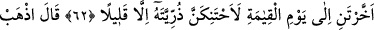
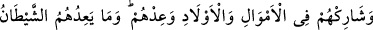

ŞEYTAN ALDATMADAN BAŞKA
BİR ŞEY VÂDETMEZ
61. Meleklere: “Âdem’e secde edin!” demiştik. İblis’in dışında hepsi secde ettiler.
İblis: “Ben çamurdan yarattığın bir kimseye secde eder miyim?” dedi.
62. “Şu benden üstün kıldığına da bir bak! Yemin ederim ki, eğer beni kıyâmete
kadar yaşatırsan, pek azı dışında, onun neslini kendime bağlayacağım!” dedi.
63. Allah buyurdu: “Git! Onlardan kim sana uyarsa, iyi bilin ki hepinizin cezası
cehennemdir. Tam bir ceza!”
64. Onlardan gücünün yettiği kimseleri dâvetinle şaşırt; süvarilerinle ve
yayalarınla onları yaygaraya boğ; mallarına, evlâtlarına ortak ol, kendilerine
vaadlerde bulun.” Şeytan, insanlara, aldatmadan başka bir şey vâdetmez.
65. Şurası muhakkak ki, benim (ihlâslı) kullarım üzerinde senin hiçbir ağırlığın
olmayacaktır. (Onlara) vekil olarak Rabbin yeter.
“Meleklere: “Âdeme secde edin!” demiştik.” Yâni, meleklere “Âdeme secde edin”
dediğimiz vakti an. Yüce ruhlar, yâni müheyyem melekler secde emrinin dışındadır.
Çünkü onlar Hak Teâlâ’yı müşâhedede müstağrak olduklarından Âdem (a.s.)’ın da
başkasının da yaratılmasından habersizdirler. Hz. Âdem’e secde, bunu gerektiren
fazîletlere sahip olduğundan ona bir selâm ve ikram olması içindi.
et-Te’vîlâtü’n-Necmiyye’de şöyle der: Allah, Âdem’i yarattı ve onda tecellî etti.
Dolayısıyla secde hakîkatte Allah Teâlâ içindi. Âdem (a.s.) da secdenin kıblesi olan
Kâbe mesâbesindeydi.
“İblis’in dışında hepsi secde ettiler.” Melekler Allah’ın emrine uyarak ve Âdem
(a.s.)’ın hakkını yerine getirmek için herhangi bir tereddüt göstermeden hemen secde